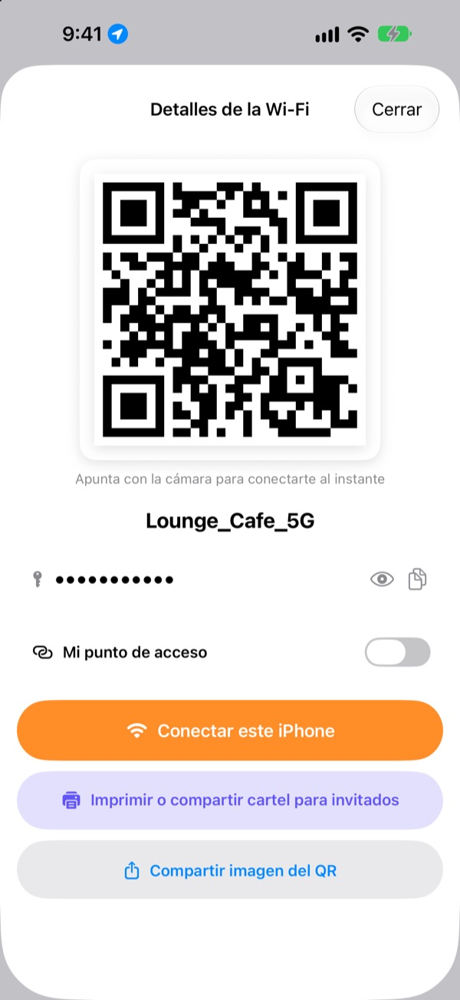
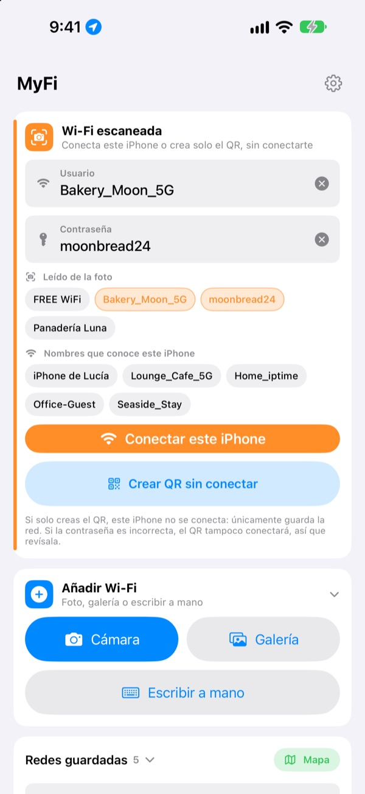
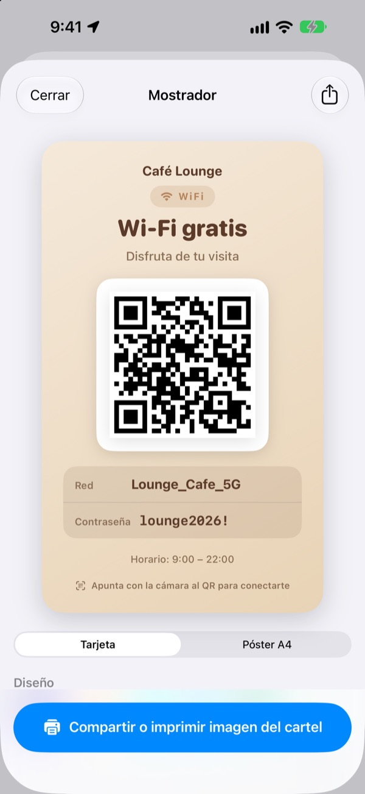
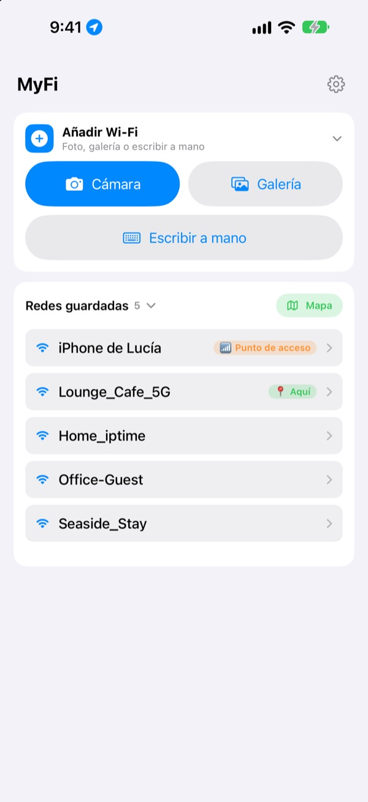

No dictes más la contraseña.
Enseña un código QR.
Tus amigos apuntan con la cámara y ya están dentro. ¿El cartel en la pared de la cafetería? Una foto y este iPhone se conecta. Se acabaron las erratas al copiarla.
Todas las funciones son gratis. iPhone con iOS 17 o posterior.

Crea el código QR de tu Wi-Fi
Cambia el nombre o la contraseña y el cartel se actualiza al instante. Apunta con la cámara de un móvil y te aparecerá de verdad el aviso para conectarte.
«¿Cuál era la contraseña del Wi-Fi?» ¿Cuántas veces van hoy?
La dictas y te equivocas con las mayúsculas. Copias el cartel de la pared y confundes el 0 con la O. Y luego lo vuelves a explicar. MyFi lo resume en una foto y un código QR.
Una foto y ya estás conectado
Fotografía el cartel del Wi-Fi o el tique, o elige una imagen de la galería. MyFi lee el nombre de la red y la contraseña y conecta este iPhone. Si el cartel también tiene un código QR, lo lee primero para que los datos sean exactos.
Si el texto no está claro, arrastra un fragmento sacado de la foto al campo del nombre o de la contraseña.

Crea e imprime el cartel para invitados
Elige uno de los 7 temas y añade el nombre del local, el logotipo y líneas como el horario. Escoge tarjeta o póster A4 vertical, guárdalo como imagen o imprímelo al momento con AirPrint.
Guarda varios carteles, uno por local o por mesa, y edítalos cuando quieras.

Donde vuelves, aparece primero
Las redes a las que te conectas o que compartes se guardan junto con el lugar. Cuando vuelves, esa red sale arriba de la lista, y todos los lugares guardados están en un mapa.
Pon el código QR de tu Wi-Fi más compartida como widget en la pantalla de inicio o en la pantalla bloqueada. Si un invitado pregunta, solo tienes que enseñar la pantalla.

Empieza en tres pasos
- 1
Abre la app
Pide una vez acceso a la ubicación, porque iOS solo da el nombre de la Wi-Fi actual a las apps que lo tienen.
- 2
Fotografía o escribe
Haz una foto al cartel o escribe una sola vez la contraseña de tu Wi-Fi.
- 3
Conéctate o enséñalo
Conecta este iPhone o muestra el código QR a la cámara de la otra persona.
Dónde está cada cosa
- Conectarte con la foto de un cartel
Añadir Wi-Fi, luegoCámaraoGalería, luegoConectar este iPhone- Escribir los datos
Añadir Wi-Fi, luegoEscribir a mano- Crear solo el código QR
Crear QR sin conectar- Enviar el código QR por mensaje
- Toca una red guardada y luego
Compartir imagen del QR - Cartel para invitados
- Toca una red guardada y luego
Imprimir o compartir cartel para invitados - Tu punto de acceso como QR
- Toca una red guardada y activa
Mi punto de acceso - Conectar o compartir de un gesto
- En la lista, desliza a la derecha para conectar y a la izquierda para compartir
- Ver los lugares guardados
Mapa, junto aRedes guardadas- El QR en la pantalla de inicio
- Mantén pulsada la pantalla de inicio y añade el widget
QR de Wi-Fide MyFi
También puedes abrir el código QR directamente con Siri o con la app Atajos.
Todas las funciones son gratis
Gratis
- Conectarte al Wi-Fi con una foto
- Crear códigos QR y compartirlos como imagen
- Carteles para invitados en 7 temas, tarjeta o póster A4, impresión con AirPrint
- Widgets para la pantalla de inicio y la bloqueada
- Mapa de tus redes guardadas
- Sin anuncios y sin registro
Propina (opcional)
- Si te gusta, puedes apoyar el desarrollo con una propina
- La propina no desbloquea nada. Sin ella tienes todas las funciones
La propina es un pequeño pago único.
Sin suscripciones y sin funciones de pago.
Preguntas frecuentes
¿Por qué tengo que escribir la contraseña?
iOS no deja que ninguna app lea las contraseñas de Wi-Fi guardadas en el dispositivo. Por eso MyFi detecta el nombre de la red y tú escribes la contraseña una sola vez. Después usa la guardada.
No veo el nombre de la Wi-Fi a la que estoy conectado.
iOS solo da el nombre de la Wi-Fi a las apps con acceso a la ubicación. Permite MyFi en Ajustes › Privacidad y seguridad › Localización. La ubicación solo se usa para leer el nombre de la red y reconocer los sitios a los que vuelves.
Ha leído mal el nombre o la contraseña.
Acércate y haz la foto recta. Si sigue fallando, arrastra el fragmento correcto de la foto al campo o corrígelo a mano. Si el cartel tiene un código QR de Wi-Fi, MyFi lo lee y rellena los datos exactos.
¿Qué carteles puede leer?
Funciona mejor con carteles en inglés o coreano, con etiquetas como ID, PW, SSID, Network o Password. Aunque no haya etiquetas, detecta la línea que parece una contraseña. El código QR de Wi-Fi de un cartel se lee con exactitud en cualquier idioma.
¿Cómo se conecta alguien con mi código QR?
En iPhone o Android, basta con apuntar la cámara integrada al código y tocar el aviso para conectarse. No hace falta ninguna app.
¿Pueden otros ver mi contraseña?
El código QR lleva los datos de conexión Wi-Fi estándar. Siempre decides tú si compartirlo, y en el cartel para invitados puedes ocultar la contraseña.
¿Por qué no puedo conectarme a mi propio punto de acceso?
El punto de acceso personal de tu iPhone es el propio móvil, así que no puede conectarse a sí mismo. Activa Mi punto de acceso y MyFi lo tratará como un código QR para compartir.
¿Adónde van mis datos de Wi-Fi?
MyFi no tiene servidor. Nombres de red, contraseñas, resultados de las fotos y ubicaciones se procesan y guardan solo en tu dispositivo. Sin anuncios ni rastreo. La app solo envía a Apple iCloud estadísticas de uso anónimas e informes de errores para poder corregirla.
¿En qué dispositivos funciona?
En iPhone con iOS 17 o posterior. La app está en 24 idiomas.
¿Dudas o comentarios? Escribe a leeo@kakao.com. Suelo contestar en 2 o 3 días.